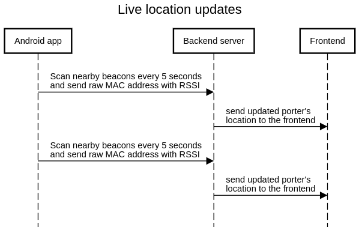
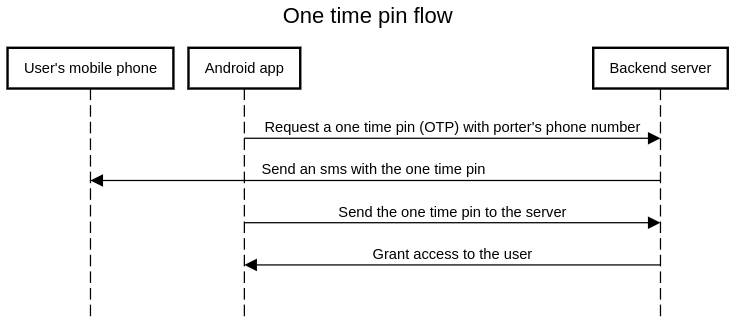

System Design
Building the ideal system for our solution.
Our solution consists of a mobile application and a web application:
MOBILE APPLICATIONPorters will have our mobile phone application installed on their work phones. This application is split into two fragments:
- Login Fragment: Handles all the logic for a porter to securely login into our PorterBLE system, including the use of a one-time authentication pin. Once a user has been authenticated, the app then establishes a secure, two-way Firebase connection with our web application, so that the two can communicate swiftly and securely.
- Scanner Fragment: Scans for Bluetooth beacons and updates the backend with the latest beacon information every 5 seconds. Allows porters to declare themselves as available/unavailable for deliveries, accept or reject incoming delivery requests and also indicate that they have completed a delivery.
Our web application is hosted on Firebase, as per our clients' request. It consists of a frontend and backend:
- Frontend: Displays live multi-floor hospital floorplan with real-time porter location updates and allows hospital staff to create and track delivery requests. Allows for the registering of porters, beacons and delivery locations on the hospital map. Also has all the relevant documentation for porters to download, setup and use our mobile application.
- Backend: Stores all relevant porter, beacon and delivery location information. Maintains Twilio service for one-time pin SMS generation and distribution. Also responsible for porter authentication through Firebase Cloud Messaging (FCM) token exchange.
System Architecture
It was crucial for us to plan out a system architecture that would facilitate swift communication between our mobile application and web application.

Figure 1: System Architecture Overview.
Site Map
Our aim, as with all other components was to make our website as intuitive to use as possible. It
was imperative to do so,
as in a hospital setting, staff will want to navigate our applications as swiftly as possible;
we did not want to design
some complex-looking solution which would slow their performance and potentially cause longer
waiting times for patients.
Therefore, we separated our website into the following tabs:
- Live Monitoring: Allows hospital staff to view real-time porter locations on multi-floor hospital map and make requests to them.
- Deliveries: Allows hospital staff track the details including status of current and completed deliveries.
- Beacons: Allows hospital staff to indicate where in the hospital physical beacons have been placed.
- Locations: Allows hospital staff to indicate where on the floorplan delivery locations are.
- Mobile Application: Allows hospital staff to download the Android APK for our solution, as well as view instructions on how to install, setup and use it.

Figure 2: Web Application Site Map.
Sequence Diagrams
Figure 3: Live location updates sequence diagram.
Figure 4: One time pin flow sequence diagram
Data Storage
We chose a relational database because our data has a clear structure and can be organized into tables with defined relationships. For example, each Porter can have multiple Deliveries assigned to them, and each Delivery has a Location associated with it. Additionally, we have a OneTimePin entity that has a one-to-one relationship with each Porter, to facilitate authentication. By using a relational database, we can easily maintain the relationships between these entities, and efficiently query and update our data.

Figure 5: ER Diagram.
System Design Discussion
Web Application
With regards to our web application, usability and delivery speed were our two main concerns. We are proud to have designed a web application that hospital staff can use to quickly create delivery requests which are fulfilled at a quick pace due to our efficient porter selection request system in the backend. A brief overview of the web app:Frontend
In the world of software development, choosing the right technology stack is crucial for creating
successful and scalable applications. Recently, we had the opportunity to build a frontend for
our
application using the React JavaScript framework, and it was an excellent decision for our
team.
React is a popular open-source JavaScript library that allows developers to build user
interfaces
(UI) by breaking down complex UI elements into smaller, reusable components. React's virtual DOM
efficiently updates the UI and delivers a smooth user experience. It is also highly
customizable,
allowing developers to add third-party libraries, which can speed up development time.
We chose React for several reasons. Firstly, it is an efficient tool for developing complex
applications that require many UI elements and interactions. Additionally, the use of components
in
React makes it easier to reuse code and maintain consistency across the application.
Another significant advantage of React is that it is well-documented and supported by a large
community of developers. This means that when we encountered any issues or needed to add new
features, we had a vast array of resources available to help us.
For our application, we also needed to receive instant updates about a porter's position and any
delivery responses. To achieve this, we used websockets, which are a technology that enables
real-time communication between a client and a server.
Websockets allowed us to receive updates from the server without having to make frequent
requests for
new data. This not only reduced server load but also improved the overall user experience by
providing real-time information.
We started by creating a WebSocket instance in our React component and then using the
'react-stomp'
library to connect to the server. We then set up event listeners for incoming data and used the
state to update the UI when the server sent new information.
Overall, using React and websockets proved to be an excellent combination for our application's
frontend. React allowed us to create a highly responsive and customizable UI, while websockets
enabled real-time communication with the server, which was crucial for our application's
functionality.
In conclusion, choosing the right technology stack is a crucial decision for building successful
applications. React's ability to create complex UI elements using reusable components and its
large
community of developers make it an excellent choice for building frontend applications.
Additionally, the use of websockets allows for real-time communication and reduces server load,
which ultimately improves the user experience.
As well as using React and websockets, we also hosted our application using Firebase.
Firebase provides a simple and reliable way to host web
applications and provides several useful features such as authentication, cloud storage.
Hosting our application using Firebase was a straightforward process. We first created a
Firebase
account and then used the Firebase CLI to deploy our application. We also configured our
Firebase
project to use SSL to ensure that our application was secure.
Firebase's hosting service also provides automatic scaling, which means that our application can
handle traffic spikes without any additional configuration. This is essential for ensuring that
our
application is always available, even during peak usage.
In today's digital age, creating scalable and reliable backend services is essential for building
successful applications. Recently, we had the opportunity to design our backend service using
the Spring
Boot framework, Google Cloud SQL PostgreSQL for a database, and deployed our app with Google
Cloud Run.
Spring Boot is a popular open-source Java framework that allows developers to create standalone,
production-grade applications quickly. It is designed to simplify the development process by
providing
preconfigured libraries and tools for building web applications.
One of the reasons we chose Spring Boot was its simplicity and ease of use. The framework's
auto-configuration and starter dependencies allow developers to quickly build and deploy
applications
with minimal configuration. Additionally, Spring Boot's community support and extensive
documentation
make it an excellent choice for building robust backend services.
For our database, we chose Google Cloud SQL PostgreSQL. PostgreSQL is a popular open-source
relational
database management system that is known for its reliability, scalability, and extensibility.
Google
Cloud SQL is a fully managed relational database service that makes it easy to set up, maintain,
and
administer PostgreSQL databases on Google Cloud Platform.
Google Cloud SQL PostgreSQL provides several useful features, such as automatic backups,
replication,
and high availability, that ensure our application's data is always available and secure.
Additionally,
the integration with Google Cloud Platform allows for easy scaling and maintenance of our
database,
which is crucial for handling large amounts of data.
To deploy our application, we chose Google Cloud Run, a serverless compute platform that enables
developers to run containers in a fully managed environment. Cloud Run abstracts away the
underlying
infrastructure, which allows developers to focus on writing code rather than managing
servers.
Google Cloud Run also provides automatic scaling, which means our application can handle traffic
spikes
without any additional configuration. This is essential for ensuring that our backend service is
always
available and responsive, even during peak usage.
Our backend service receives updates from the users through the mobile app and sends processed
updates
to the UI. It also sends SMS messages and push notifications to the porters. To achieve this, we
used
several APIs and services, such as Twilio for sending SMS messages and Firebase Cloud Messaging
for push
notifications.
Overall, using Spring Boot, Google Cloud SQL PostgreSQL, and deploying our app with Google Cloud
Run
proved to be an excellent combination for designing our backend service. Spring Boot's
simplicity and
ease of use allowed us to quickly build and deploy our application, while Google Cloud SQL
PostgreSQL
and Google Cloud Run provided a scalable and reliable infrastructure for our database and
backend
service.
By using these technologies, we were able to create a robust backend service that processed
updates from
the mobile app, sent notifications to the porters, and updated the UI in real-time. We were also
able to
scale our application automatically, ensuring that our service was always available and
responsive to
user requests.
Mobile Application
The development of the app started with the choice of the Kotlin programming language, which has
recently become the preferred language
for Android app development. Kotlin is a modern, statically typed language that is designed to
make Android app development more efficient
and less error-prone. Its interoperability with Java made it an ideal language for our system as
it allowed us leverage existing Java libraries,
such as the Bluetooth Low Energy and Firebase libraries, while taking advantage of Kotlin's
development features, like extension functions and
coroutines.
As our mobile application depended on making frequent HTTP requests to our backend API endpoint,
our system design relied heavily on Kotlin’s
coroutine features and HTTP classes to implement multithreading capabilities which would allow
our application to run separate HTTP requests
simultaneously if necessary.
Our system also relied on Kotlin’s BLE API which allowed our app to successfully detect nearby
Bluetooth Low Energy beacons; a feature that
was imperative for our solution.
For more details and technical information about our implementation, you can read our implementation articles which explain how each component of our system was created.
Detailed system overview
For more details regarding what each component of our system is responsible for, please consult the image below:

Figure 6: Detailed System Architecture Component Description.